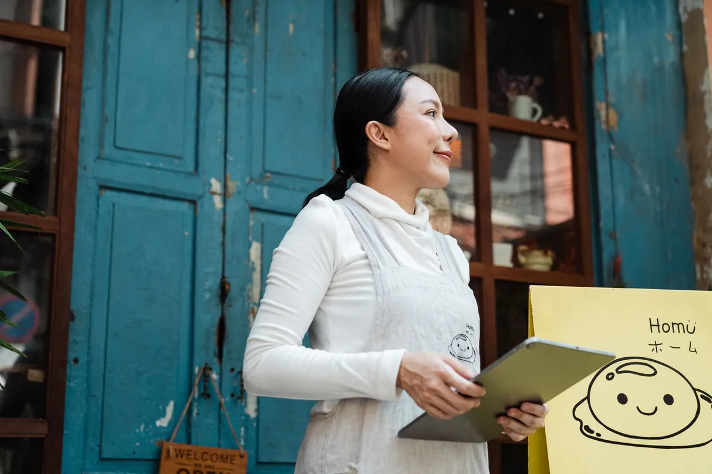

Programa de fidelidade para delivery: como fazer o cliente voltar e aumentar o ticket médio

Faturamento de delivery é uma conta simples: número de pedidos × ticket médio. Dá para crescer trazendo cliente novo (caro) ou fazendo o cliente atual voltar mais vezes e gastar um pouco mais em cada pedido (barato). Fidelidade e ticket médio são as duas alavancas do segundo caminho.
Como calcular o ticket médio
Ticket médio = faturamento do período ÷ número de pedidos. R$30.000 em 750 pedidos = R$40. Subir para R$44 (10%) com os mesmos pedidos = R$3.000 a mais no mês, sem gastar um real com anúncio. O relatório do Menuzia mostra ticket médio, itens por pedido e horário de pico, comparando com o período anterior.
6 jeitos de aumentar o ticket médio
- Order bump ("peça também"): ao adicionar o lanche, o cardápio sugere batata, bebida ou sobremesa. É a técnica com maior retorno.
- Adicionais pagos bem fotografados: bacon extra, cheddar, borda recheada. Veja como cadastrar complementos e adicionais.
- Combos com desconto pequeno: lanche + batata + bebida por menos que a soma — o cliente sobe de 1 para 3 itens.
- Tamanhos: P, M e G, com o M como "mais pedido" (o famoso efeito isca).
- Pedido mínimo para frete grátis um pouco acima do ticket atual.
- Cardápio enxuto e com foto: menos dúvida, mais clique.
Programa de fidelidade que funciona no delivery
- Recompensa alcançável: se o cliente pede 2 vezes por mês, fidelidade de "20 pedidos" não motiva ninguém. Prefira metas curtas.
- Brinde, não só desconto: sobremesa ou batata grátis custa pouco no seu CMV e vale muito na percepção do cliente.
- Cupom de volta: cupom válido só no próximo pedido, com prazo curto, puxa a recompra.
- Avise pelo WhatsApp: "faltam 2 pedidos pro seu lanche grátis" — use o disparo segmentado.
No Menuzia você tem cupons, programa de fidelidade e order bump no mesmo cardápio digital, e a base de clientes é sua — no aplicativo, o cliente fiel é fiel à plataforma.
Fidelidade não funciona se você paga comissão em cada recompra
No app, o cliente que volta 10 vezes gera 10 comissões. No canal próprio, a recompra sai a custo fixo. Por isso a fidelidade rende mais no cardápio digital sem comissão — R$67/mês fixo, venda quanto vender.
Buscas relacionadas
O que donos de restaurante e delivery pesquisam antes de contratar — cada busca leva para a página que responde a ela:
Perguntas frequentes
Como calcular o ticket médio do delivery?
Divida o faturamento do período pelo número de pedidos. Exemplo: R$30.000 em 750 pedidos = ticket médio de R$40.
O que é order bump?
É a sugestão "peça também" que aparece quando o cliente adiciona um item: batata, bebida ou sobremesa com um clique. É uma das formas mais simples de aumentar o ticket médio.
Qual o melhor tipo de programa de fidelidade para delivery?
O que tem recompensa alcançável em poucos pedidos e é lembrado pelo WhatsApp. Brindes de baixo custo, como sobremesa ou batata, costumam funcionar melhor que descontos grandes.
O Menuzia tem cupom e fidelidade?
Sim. Cupons, programa de fidelidade e order bump fazem parte do plano de R$67/mês fixo.
Dá para ver o ticket médio no sistema?
Sim. O relatório mostra ticket médio, itens por pedido, horário de pico e comparação com o período anterior.
Pare de pagar comissão por pedido
Cardápio digital próprio por R$67/mês fixo. Nossa equipe configura pra você e o suporte está incluso.
Criar Meu Cardápio Agora →